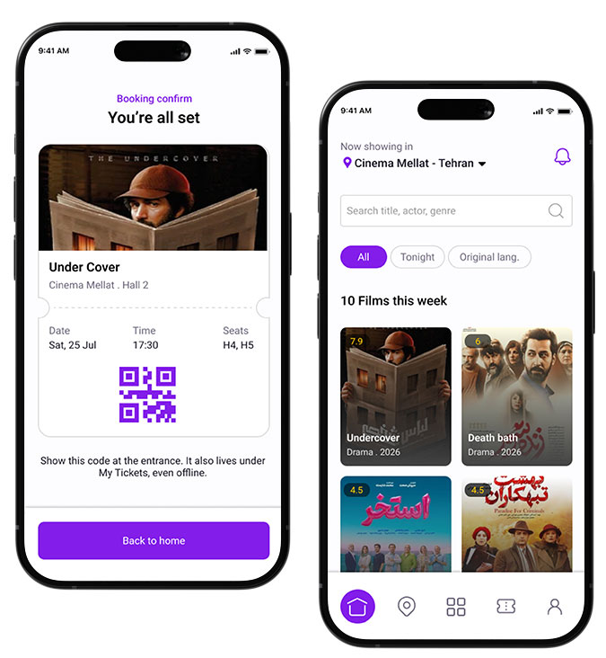
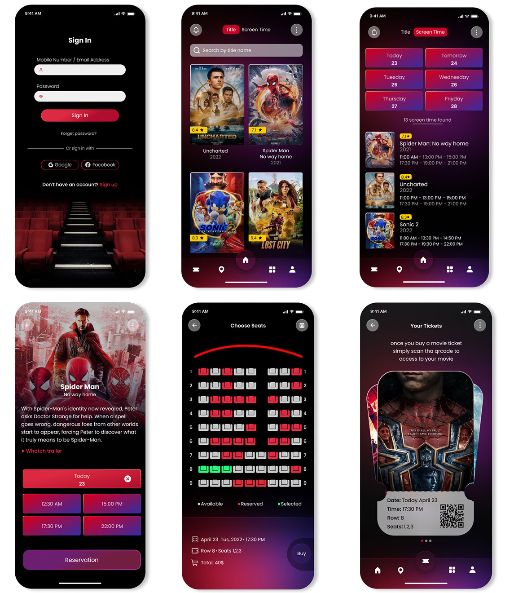
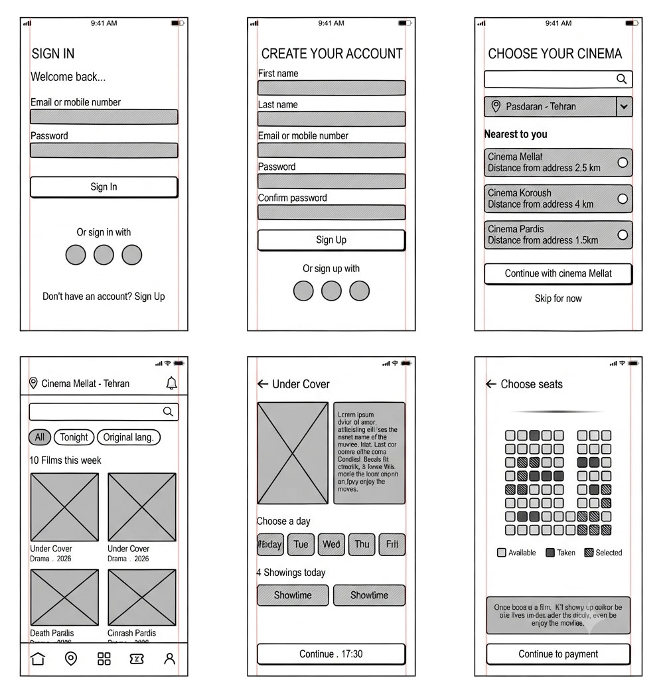
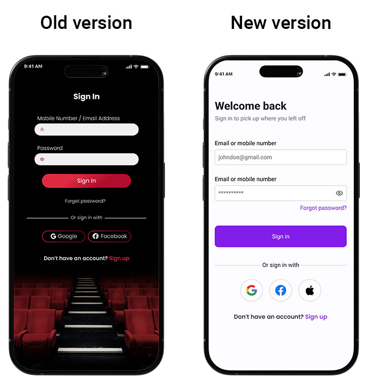
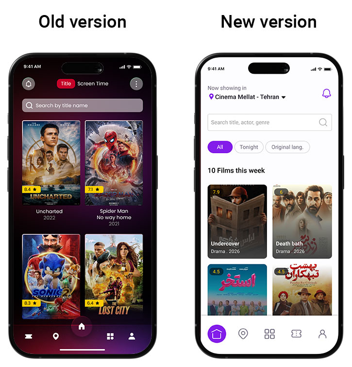
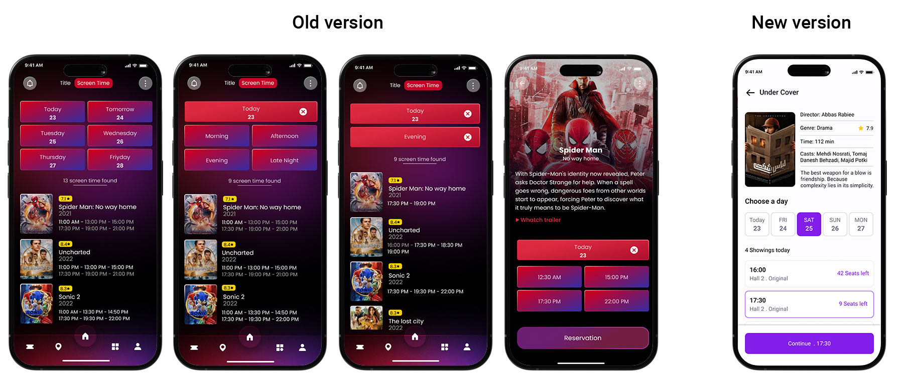
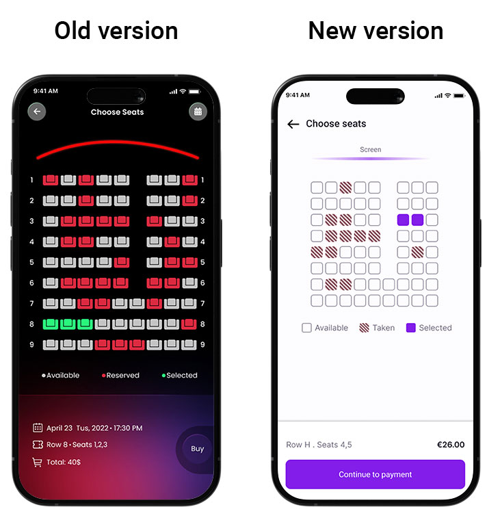
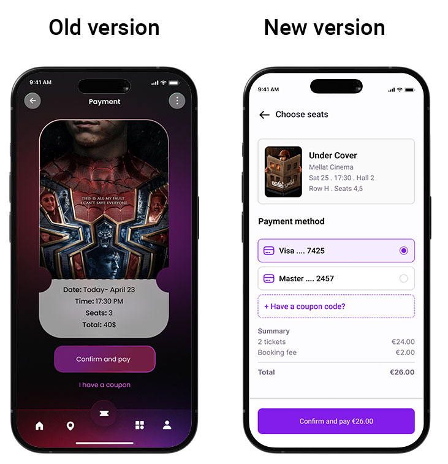
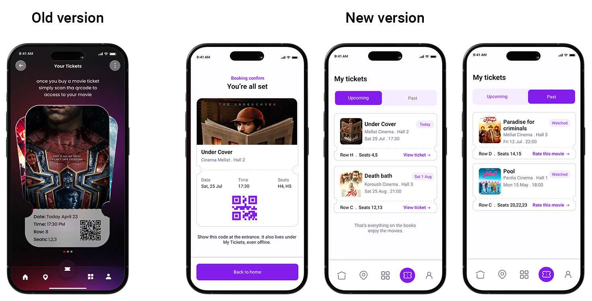
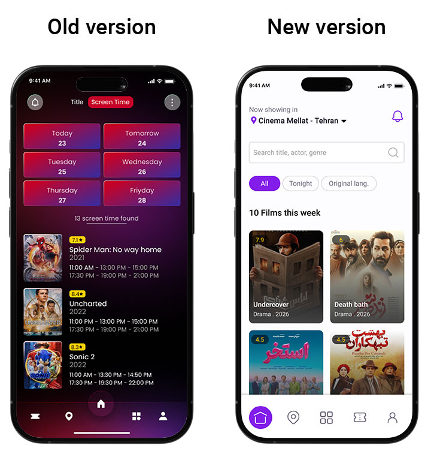

Gisheh
Redesigning a Movie Ticketing Flow
Timeline
Feb-Apr 2024
Tools
Figma
Role
UX/UI Designer, design system, prototyping

Project overview
Gisheh set out to redesign its own application. Rather than designing from a blank page, the project's approach was a close audit of the existing version of the app: analyzing a real product, identifying where the user experience broke down, and rebuilding it with a coherent design system not just a visual refresh.
Problem
The original app covers a complete booking flow — sign in, browse, showtimes, seat selection, payment, and tickets — but a heuristic review surfaced five recurring issues:
- Colour used as the only signal: On the seat map, the legend lists three states (available, reserved, selected), but available and reserved are both rendered in near-identical shades of red, so at a glance the map reads as "mostly unavailable." Nothing besides colour distinguishes the states.
- Inconsistent visual hierarchy between screens:Some screens use bold section labels in full caps, others use lowercase, unlabelled groupings (e.g. "showtime found" appearing mid-flow with no clear parent heading), which makes the app feel like several screens stitched from different sources.
- Decorative imagery competing with content:The sign-in screen places the input fields over a busy cinema-hall photo, which lowers contrast on the labels. The payment screen reuses a movie's key art cropped so tightly it reads as an unrelated close-up rather than a poster.
- An unconventional bottom navigation:A floating circular button sits mid-tab-bar without a clear label, breaking the otherwise standard tab pattern and creating ambiguity about what it does relative to the other four icons.
- No way to search for cinemas by city or location:Users had no way to filter or search for cinemas based on their city or where they live, which made it harder to find the nearest or most convenient cinema.

Goals
- Make every state on the seat map distinguishable without relying on colour alone
- Establish one consistent type and spacing system across all screens
- Give the product a visual identity specific to "going to the cinema," rather than a generic dark-mode template
- Simplify the navigation pattern to a standard, predictable tab bar
Design Process
I started with a quick heuristic audit of the four original screen sets (sign in, browse, seat selection, payment/tickets), logging every friction point against Nielsen's heuristics before touching visuals. From there I built a small token system colour, type, spacing, so that decisions on one screen would hold on all the others, then moved into mid-fidelity layouts before finishing in high fidelity.
Wireframes
Before any type, colour, or imagery choices, I blocked out all screens as low-fidelity wireframes — grey placeholder fills for media, outlined boxes for interactive elements, and hatched blocks for disabled or occupied states. This is where layout problems get caught cheaply: it's what surfaced that showtimes needed day and time-of-day filters shown together rather than as sequential steps, and that the seat map needed a third visual property (not just colour) to separate its three states.

Design System
This system is built around a modern, clean user interface using primary purple and white/grey tones.
Colour
- Background: Pale near-white (#FDFCFE) is used as the primary background for main screens, and light grey (#CCCCCC) for containers, borders, and background dividers.
- Brand & Accent Colour Deep purple (#8F00FF) serves as the primary brand colour for all key interactive elements (such as buttons, active icons, and selected checkboxes).
- State Colours:
- Selected: Purple (#8F00FF) (same as the brand colour).
- Available: White with a grey outline.
- Taken / Occupied: Solid dark grey (#757575).
Type
- The primary font used throughout the app is Roboto, applied across all titles, UI text, labels, and numeric data (such as prices and times).
- Titles: Large font size and bold weight for main page headings.
- Body Copy & Labels: Medium size and regular/medium weight for descriptions and form/card labels.
Interaction Patterns
- Time Filters: Day and showtime selection are displayed together on a single screen ("Select time" screen) so the user can directly pick both. Days appear as selectable cards (with an active purple state) and times are listed below them.
- Seat Map: Utilizes a three-state visual system designed to ensure accessibility for
users with colour vision deficiencies without relying solely on colour:
- Available — Outlined squares (no fill).
- Selected — Solid purple squares.
- Taken — Solid dark grey squares.
Signature Motif
Booking Confirmation — The confirmation screen ("Confirm" screen) features a summary card topped with the movie poster and ticket details beneath it. The central element of this screen is a prominent purple QR code that acts as the final digital ticket.

Screen-by-screen changes
Sign in
- Problem: The dark UI with a cinema-hall background photo behind the form reduced label contrast and added unnecessary visual noise.
- Change: Replaced the dark theme and photo with a clean, light-mode interface (#FDFCFE background), clear input fields with #CCCCCC borders, and primary purple branding (#8F00FF) for the action button and links. Social sign-ins were also expanded to include Google, Facebook, and Apple options.

Browse, Search & Location
- Problem: The original design split navigation into separate tabs/modes ("Title" vs "Screen Time") at the top, and lacked the ability to select a cinema or search based on the user's location.
- Change: The segmented mode toggles were replaced with a unified home screen featuring a prominent search bar ("Search title, actor, genre") and clean filter chips (All / Tonight / Original lang.). Additionally, a location-based cinema selection feature was added (showing cinemas near the user with calculated distances) so users can easily search and choose films and cinemas based on their location.

Showtimes
- Problem: the day and time filters progressively narrow the list (Today → Morning/Afternoon/Evening → results), but each step re-shows the same header ("Today 23") without clarifying what's new, and the result count label ("9 screen time found") isn't grammatical or clearly tied to a heading.
- Change: day and time-of-day are shown together as two independent filter rows above a single results list, so the current selection is always visible in one glance, and each showtime row now surfaces seats-left as a real signal ("9 seats left") instead of a generic count.

Seat selection
- Problem: In the original design, available seats are grey outlines and reserved seats are red fills, which lacks texture or secondary visual indicators for accessibility.
- Change: Available seats are unfilled outlines, taken seats use a diagonal hatched fill in a separate dusty rose/brown hue, and selected seats are solid purple — ensuring states are distinguishable by shape and texture rather than colour alone.

Payment
- Problem: The original design used a dark, high-contrast ticket card featuring a tightly-cropped movie poster as a background image, with minimal breakdown of payment methods or itemized costs.
- Change: Replaced with a clean, light-mode summary card including a clear poster thumbnail, movie title, cinema name, date, time, and seat details. Added selectable payment method options (Visa/Mastercard), an explicit coupon code field, and a clear itemized summary with a total amount displayed directly on the primary confirmation button.

Ticket confirmation
- Problem: n the old design, confirming a booking navigated users directly to a generic tickets list, bypassing an explicit confirmation step, while the tickets view lacked categorization for past and upcoming movies.
- Change: Introduced a dedicated "You're all set" confirmation screen right after payment with a clear torn-ticket card, QR code, and an explicit reassurance message ("Show this code at the entrance. It also lives under My Tickets, even offline."). Additionally, the "My Tickets" section has been redesigned with segmented tabs for "Upcoming" and "Past" tickets, providing clear actions like "View ticket" or "Rate this movie".

Navigation:
- Problem: The original navigation featured a dark, floating button that broke the standard layout flow, making the interface harder to navigate.
- Change: Replaced it with a clean, simple, and easy-to-understand bottom tab bar consisting of five clear pages (Home, Location of cinemas, List of movies, Tickets, and Profile), creating a familiar and predictable pattern for users.

Reflection
The hardest part wasn't the visual system it was resisting the urge to redesign everything at once. Starting with a thorough UX audit meant every change was driven by a genuine usability issue rather than personal preference. Having successfully completed this end-to-end redesign, this project stands as a comprehensive case study in transforming a cluttered and fragmented cinematic booking experience into a seamless, accessible, and intuitive user journey.